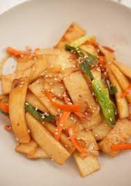

Fishcake

Description
This is a popular side dish, eaten with rice. It can be made sweet or spicy, depending on your taste. It's a fast and easy recipe.
Ingredients
- fish cake, sliced into thin pieces
- rice syrup
- toasted sesame oil
- toasted sesame seeds
- medium onion
- carrot, sliced thinly
- garlic clove, minced
- green onion, chopped
- hot pepper paste (optional)
Instructions
- Heat sliced fish cakes until light golden brown
- Add onion, carrot, and garlic and keep stirring until onion is translucent
- Turn heat down and add rice syrup and optional hot pepper paste to fishcake and vegetables mix
- Remove from heat. Add green onion, toasted sesame oil and sprinkle sesame seeds onto mix
- Enjoy with rice